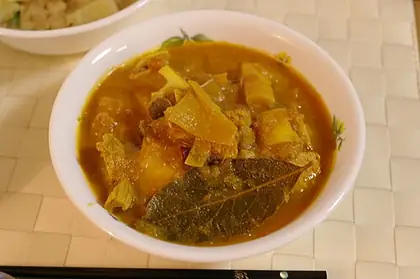

Main course · Popular in Northeast
Bamboo shoot pork
Bamboo shoot pork is made with wild bamboo shoots, a favourite in Northeast.

How do you make bamboo shoot pork?
Pork cooked with fermented bamboo shoot and chilli. A Naga and Assamese classic.
Wild ingredients
- Bamboo shoots (Bambusa): in season June to September
Watch the recipe

Video: Olivia Kamei on YouTube